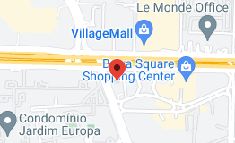
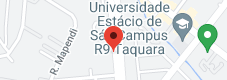

Nossas Lojas
Barra da Tijuca

Av. das Américas, 3959 - Barra da Tijuca, Rio de Janeiro - RJ, 22631-003
A loja fictícia de hardwares, periféricos e celulares VTR na Barra da Tijuca é uma empresa que vende produtos de informática e comunicação,
como computadores, notebooks, mouses, teclados, fones de ouvido, webcams, caixas de som, smartphones, tablets, entre outros.
Venha conhecer
Taquara

Estr. dos Bandeirantes, 304 - Taquara, Rio de Janeiro - RJ, 22710-112
A loja fictícia de hardwares, periféricos e celulares VTR na Taquara é uma empresa que vende produtos de informática e comunicação,
como computadores, notebooks, mouses, teclados, fones de ouvido, webcams, caixas de som, smartphones, tablets, entre outros.
Venha conhecer
Madureira
Estr. do Portela - Madureira, Rio de Janeiro - RJ, 21351-050
A loja fictícia de hardwares, periféricos e celulares VTR em Madureira é uma empresa que vende produtos de informática e comunicação,
como computadores, notebooks, mouses, teclados, fones de ouvido, webcams, caixas de som, smartphones, tablets, entre outros.
Venha conhecer